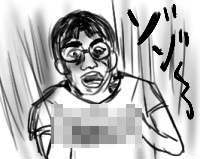
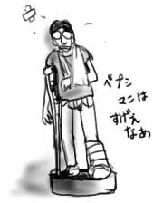
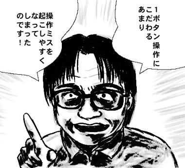

今日は夏に相応しく、背筋の凍るような話をしよう。
ある男が、仕事から帰ってきて夕飯を作ろうと冷蔵庫を開けた。食財を取り出しながら手際よく冷蔵庫を整理していると見覚えのない包みが扉のポケットに挟まっていることに気付いた。こんなもの入れたっけな？と思いながら包みに手を延ばす。ぐにゃりとした手触りになんだか嫌な予感がする。男は意を決して包みを開けた。
コンニャク
もうわかってると思うけど、ある男ってオレ！つーか、いつのコンニャクよ！確か年末におでん作った記憶はあるんですけど。なんかカビた水彩絵の具入れの匂いがしました。

今さらではあるんですが、新生King Crimsonによるアルバム『The ConstruKction of Light』の恐ろしいまでの知的エンターテイメント大作っぷりに発売日に買って以来、何度も何度も聞き返しては大興奮。R&D機関による技術開発期間を経て取り組んだ商品開発であり、そのプロダクトはと言えば、それぞれ拍子の異なるギターとドラムとベースがうねりながら変拍子を繰り返すという、その技術力をひたすら追求したものでした。彼等の音楽はどちらかというとサイエンスやエンジニアリングの範疇にあり、彼等の開発する製品はまるで鋼鉄の鎧と電子頭脳を持った兵器のようです。戦争の道具を作ることへの畏怖はなく、制御方法についてにのみその灰色の脳細胞を働かせる。だが果たしてこの兵器でどこの誰と戦おうというのか。僕らには、その圧倒的な戦闘力にただただ腰を抜かすことしか残されていません。
ペプシ買ったら、骨折したペプシマンボトルキャップが。こんなところでも満身創痍です。

64ゼルダ『ムジュラの仮面』の画面を初めて見た時、『厄痛』かと思ったよ！(挨拶)
リンクが紅天女を目指してがんばる話。多分。
HDDがぶっ壊れたよ！
そんなわけでキャデス太郎達の元データとか、ぼちぼち公開しようとため込んでたデータとかが全部消失し、失意も頂点に。でも、かなり前のバックアップからデータを戻したりとか、必要なものをネットワーク上からダウンロードとかしていくうちになんだか自分を取り戻していっている感じがして盛り上がったりした。癒し？再インストールで癒しの効果が！？むしろ病気です(心の)。分散配置された網上の端末からHDD上に再現されていく自分。こんな感じで人生もやり直せないかしら。でも、あくまで再現なので同じ轍を(endless)。
ゲーム！ゲーム！というわけで、最近は映画まがいばかりが市場を賑わせててPS2とかあんまり食指も動かなかったんですが、…え？これってDVDなの？本物の映画？ゲームはないの？って感じで。
ゲーセンでも『アクアラッシュ』とかで縦に伸ばしたり、BUZZって楽しんでたりするくらいだったんですが(結構やってるじゃん)、出ましたヨ！僕らのライジングの新作『ブレイブブレイド』が。
システムとしては、ショットボタン＋近接攻撃ボタンで、近接攻撃の方が強力という、まぁありがちなもの。近接攻撃で破壊した方が勲章(得点アイテム)が出やすいので、かせぐには近接攻撃を当てていくしかないのですが、ガードボタンが近接攻撃ボタンと兼用なのでこの手のシステムにありがちな「突っ込んでいって死」がおこりにくくなっている点が評価できます。ガードするとゲージが減ってコア覚醒(ボムみたいなもの。一定時間無敵になる)が出せなくなるし、ゲージがなくなってしまうとガードブレイクになって再びゲージがたまるまでガードできなくなる＋パワーアップが1段階下がってしまうので、あまり不用意に突っ込んで行くわけにもいきません。
1ステージの分量も適度だし、近接とショットを使い分けないと駄目になってるし(しかし、うまい人ほど近接を狙いに行ける)、背景もスクロールスピードをうまく変化させて緩急をつけてるし、その緩急が、後ろに下がってショット→チャンスがあれば前に出て近接攻撃という操作上のリズム感ともあいまってプレイ感覚は悪くありません。これは確かに縦画面じゃないとダメなゲームです。この御時世において縦画面は挑戦でしかないですが。
マニア向けシューティングにありがちな弾幕系じゃないし(弾は少なめ)、初プレイでも4面くらいまでは到達できるので、むしろ初心者側に間口を広げた感じでしょう。ボスもそれなりに存在感がありますしね。
弾幕系でマニアを掴みに来たにもかかわらず、1ボタン操作(初心者対策)にこだわるあまりに操作ミスが多発(ピアッシングキャノン出してたら弾吸着になってて、ゲージが減って、出したいときに弾吸着できないってことがよく起こる)する上に1ステージが妙に長い、同時期発売の『マーズマトリックス』よりもオレ内評価は高いです。
個人的にボス重視ゲームの方が好きなので、ステージもボスも区別がつかない全編弾幕系はちょっとね。

おっとつい語りすぎてしまいました*)。前！前！キキー！(ブレーキ音＜心の)。前方に注意しながら生きるのも大変です(僕がおかしいので)。
*『ホアー！小池さん』
藤子不二雄A 作の「プライベートゴルフ場でOBした球を追っかけて行ったらキノコを見つけてみんなでキノコ食ってラリってガンガン打って終わり」など，オチもなにも成立していない巨匠っぽさの全然感じられない徒手空拳ぶりが不安感を煽り立てるマンガ。ときどき鉛筆で書いたリアルな画風に変わって小池さんがゴルフに対する蘊蓄をたれ、「おっとつい語りすぎてしまいました」と我に返ると同時に画風も元に戻る。Aじゃなかったら編集者に突き返されてるネ！初めて読んだ後、あらすじをみんなに説明したけど誰も信じてくれなかったよ。